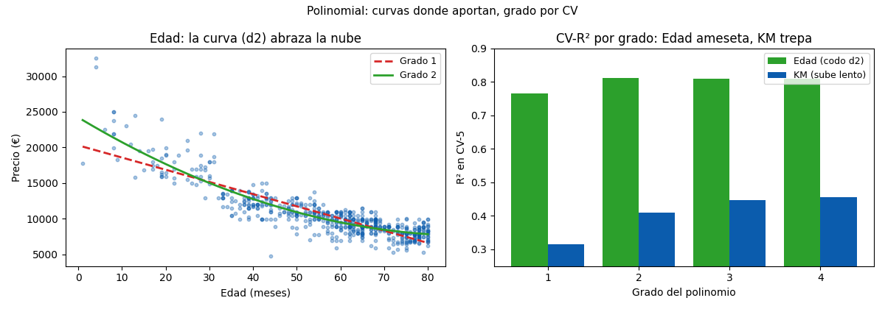

Unidad 6 · Regresión lineal simple y múltiple · Lección 0026
Regresión polinomial: curvas honestas
Win de hoy: curvar Edad (grado 2: CV 0,765→0,811, codo) y KM (grado 4: 0,456), eligiendo grado por CV y sin extrapolar.
1 · La idea: potencias como columnas nuevas
La regresión polinomial
agrega x², x³… como columnas y ajusta OLS normal: curva en x, pero lineal en los
coeficientes (OLS ni se entera). PolynomialFeatures las fabrica; estandarizar después es obligatorio
(KM⁴ llega a 10²¹ y rompe números).
from sklearn.preprocessing import PolynomialFeatures, StandardScaler
make_pipeline(PolynomialFeatures(2, include_bias=False),
StandardScaler(), LinearRegression())2 · Edad: codo en grado 2 (0,765 → 0,811)
El precio cae rápido con la edad joven y se ameseta: curva de depreciación típica. Grado 2 la abraza (+0,046 CV); grados 3–4 no aportan (0,809): ruido disfrazado de flexibilidad. Elegido: grado 2.
3 · KM: trepa lenta y peligro de extrapolar
KM sube con cada grado (0,315 → 0,411 → 0,447 → 0,456): la relación es curva de verdad. Pero ojo: extrapolar un grado 4 a KM = 300.000 (fuera de rango) da delirios: los polinomios se portan dentro de lo visto y explotan afuera. Regla: grado por CV, predicción dentro del rango.
4 · Figura: curvas y codos

Regenerar la figura (mismo resultado versionado en assets/img/toyota/):
python scripts/make_figures.py --only regresion-polinomial5 · Quiz (auto-chequeo inmediato)
6 · Fuente primaria y cierre
Para profundizar (1 fuente): James et al., An Introduction to Statistical Learning — capítulo de regresión (extensiones lineales) (statlearning.com, PDF libre; también en RESOURCES.md del curso).
¿Algo no quedó claro? Preguntame al agente: por qué estandarizar potencias, grado por CV vs ojo, o interpolar vs extrapolar. Esa pregunta vale más que releer.